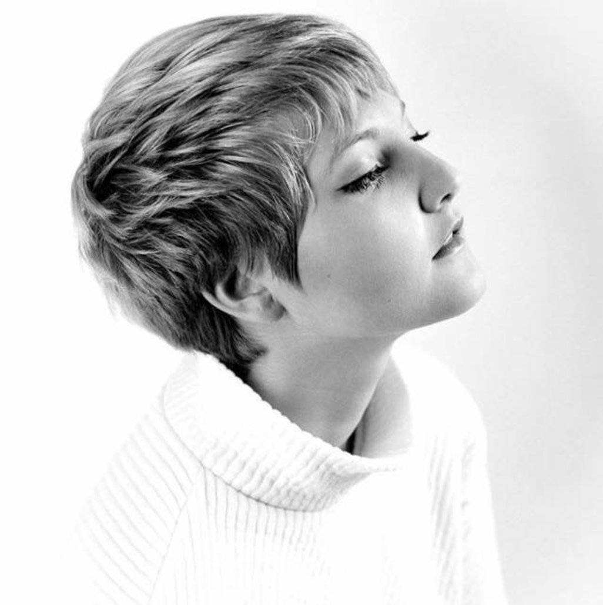

Spillet fungerer som first person point of view, hvor brugeren selv bliver stillet overfor det centrale dilemma.
Man mødes af en app-lignende baggrund, lidt alla tinder. Her er der et billede centralt på desktoppen, hvor brugeren nu bliver stillet i et dilemma om billedet burde deles eller ej.
Efter brugeren har truffet et valg, forsvinder billedet og et nyt dukker op. Brugeren skal nu tage stilling til det næste billede og sådan fortsætter billederne med at dukke op.
Jo længere man spiller, spillet jo hurtigere skal brugeren beslutte sig og efter ca. 30 sek. går tiden så hurtigt, at brugeren ikke vil kunne nå at integrere. Billederne vil automatisk blive delt og brugeren vil ikke kunne gøre noget. Spillet stopper og man har tabt. Herefter kommer krediterings billedet med teksten:
“Er du også kommet til at dele et billede, du ikke burde? Eller var du tvivl? - ring til privat snak og få snakket om det”
Spillet kan nu reloaders.
Vi arbejder med målgruppen 13-15 årige, hvori vi arbejder meget bredt på i etnicitet, seksualitet og køn. Målgruppen er danskere, fra hele landet som går i 7. til og med 9. klasse.
Vi arbejder med en målgruppe, der for alvor er kommet i puberteten og som er en periode i deres liv, hvor køn og seksualitet betyder og fylder rigtig meget. Deres store forbrug af sociale medier er et stort fokuspunkt for hele målgruppen og hvis man ønsker at kommunikere til denne målgruppe, vil de sociale medier være oplagt.
Målgruppen skal også gerne tiltales i øjenhøjde, det er derfor vigtigt at man ikke taler ned til dem. De vil gerne tages seriøst og få taget deres problemer i dialog.
Mikkel er velopdragen og meget moden i forhold til sin alder. Han er middelmådig i skolen og har ikke rigtig fundet ud af, hvad han interesserer sig for endnu, men idræt er hans yndlingsfag.
Han synes også det er sjovt at bruge sin tid på computerspil og får sjældent lavet sine lektier, fordi han sidder og spiller i stedet. Han er i øjeblikket det eneste hjemmeboende barn, da hans to store brødrer er flyttet hjemmefra.
Mikkel har en masse venner og spiller fodbold i sin fritid. Hans venner er begyndt at eksperimentere med cigaretter og alkohol, men Mikkel føler sig ikke helt klar til at drikke endnu, så han finder på undskyldninger når de andre skal ud og drikke. Han synes nogen gange at hans venner gør nogle dumme ting, men han holder sine meninger for sig selv, da han vil ikke støde nogen.
Stine er lidt yngrer end de andre i klassen. Hun startede i skole lidt før og har fødselsdag sent på året. På trods af det, kæmper hun med mange ting. Hun er enebarn og hendes forældre er skilt. Hun bor ved sin far og ser sjældent hendes mor, da hendes mor har fået en ny kæreste med børn.
Stine kan rigtig godt lide dansk. Hun er specielt vild med at skrive og synes det er rigtig fedt at male og lytte til musik. Hun har længe gået og tænkt over, at hun ikke synes at drengene er så spændende, men har et godt øje til sin gode veninde Naja. Hun er anderledes end de andre piger i klassen og synes at de lidt fjollede.
Hun har prøvet at få et billede delt uden hendes samtykke, så hun føler sig lidt udenfor. Hun kan bedst lide at sidde på hendes værelse alene og lytte til musik.
Vi mødtes med Alba på en lille café, for at lave et par test.
Vi startede med et ustruktureret interview på 5 min. hvor vi spurgte ind til hendes eget forhold, med billeddeling uden samtykke. Alba fortalte at hun selv var på instagram og snapchat men sjældent gjorde hendes private billeder tilgængelige for andre end hendes veninder.
Hun syntes ikke rigtig, hun havde et bestemt forhold til problematikken og baseret på hendes fortællinger om regelsættet på hendes skole angående billeddeling, virkede det som om at de voksne havde nogle meget klare regler om, hvornår man måtte dele et billede og hvornår man ikke måtte.
Derefter forklarede vi vores koncept og idé til spillet samt en hurtig redegørelse for, hvad privatsnak var og hvad vi gerne ville have ud af kampagnen.
Alba var interesseret og trods vores bekymring for et for indviklet spil, havde hun intet problem med at forstå handling og idé med spillet.
Derefter foretog vi en tænke højt test på vores figurer. Alba syntes at vores figurer var meget sjove og nuttede. Hun kommenterede specielt på farvevalget og forklarede at hun selv ville stoppe op, hvis hun så annoncen pga. figurernes udseende og farver.
Vi lavede til sidst en 5-sekunders test på vores billeder. Både de upassende og de passende. Alba syntes de passende var rigtig søde og at de upassende var rigtig sjove. Hun syntes ikke at de var for stødende eller vulgære, men grinede mest af figurerne. Vi prøvede at skrue op for hastigheden, for at se om hun stadig kunne se hvad der foregik på billedet med en tid på 2 sek. Det var intet problem og hun kunne også nemt genfortælle efterfølgende.
Til sidst spurgte vi hende hvad hendes overordnede indtryk af spillet var. Hun syntes at det så rigtig sjovt ud, men at hun måske ikke ville spille det i privaten, men helt sikkert ville syntes det var sjovt, hvis de fik spillet i skolen.
anja3418@stud.kea.dk
jona506a@stud.kea.dk
ceci660b@kea.stud.dk
fred356e@stud.kea.dk
dieg0023@stud.kea.dk